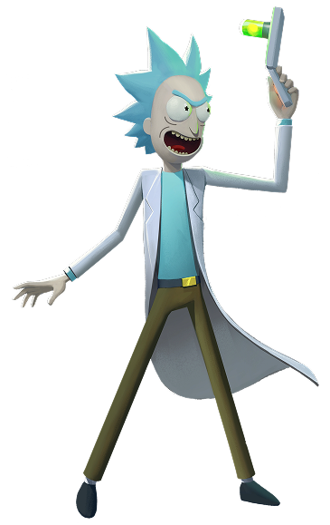

Rick Sanchez
Rick Sanchez is a brilliant but deeply troubled scientist and one of the main characters in the animated TV show Rick and Morty.
Morty Smith
Morty Smith is the other main character in the animated TV show Rick and Morty, and Rick's grandson.
Summer Smith
Summer Smith is Morty's older sister and one of the main characters in Rick and Morty. Initially portrayed as a typical teenager, she develops into a more complex and independent character, who is intelligent, resourceful, and fiercely loyal to her family.
Beth Smith
Beth is a horse surgeon, and, as Rick's daughter, she is intelligent if sometimes cold. She is voiced by Sarah Chalke.
Jerry Smith
Jerry is the husband of Beth Smith, the father of Summer Smith and Morty Smith, and the son-in-law of Rick Sanchez.